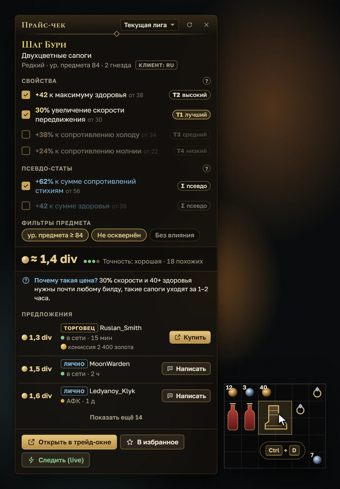
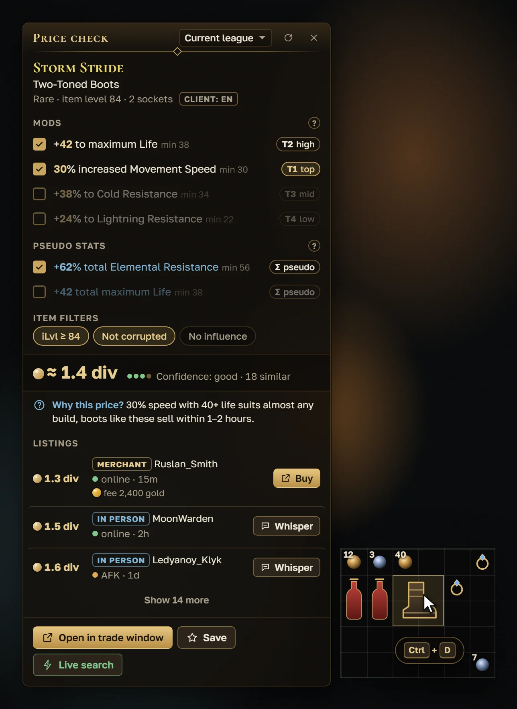
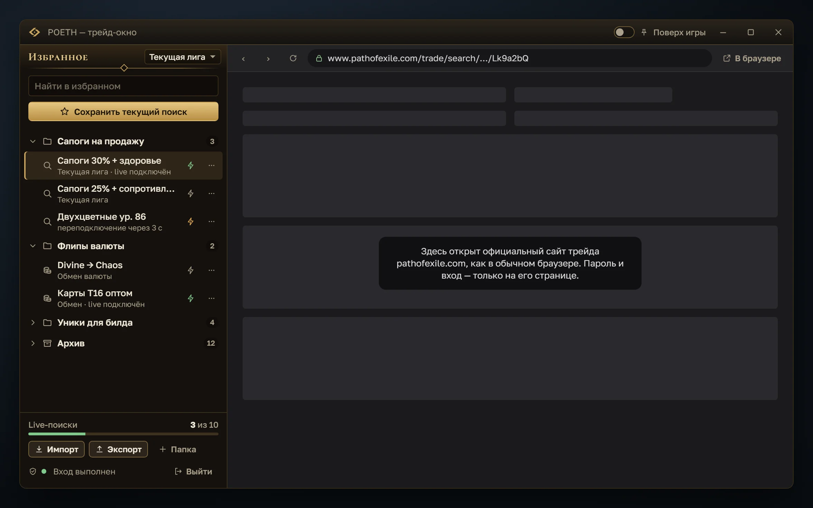
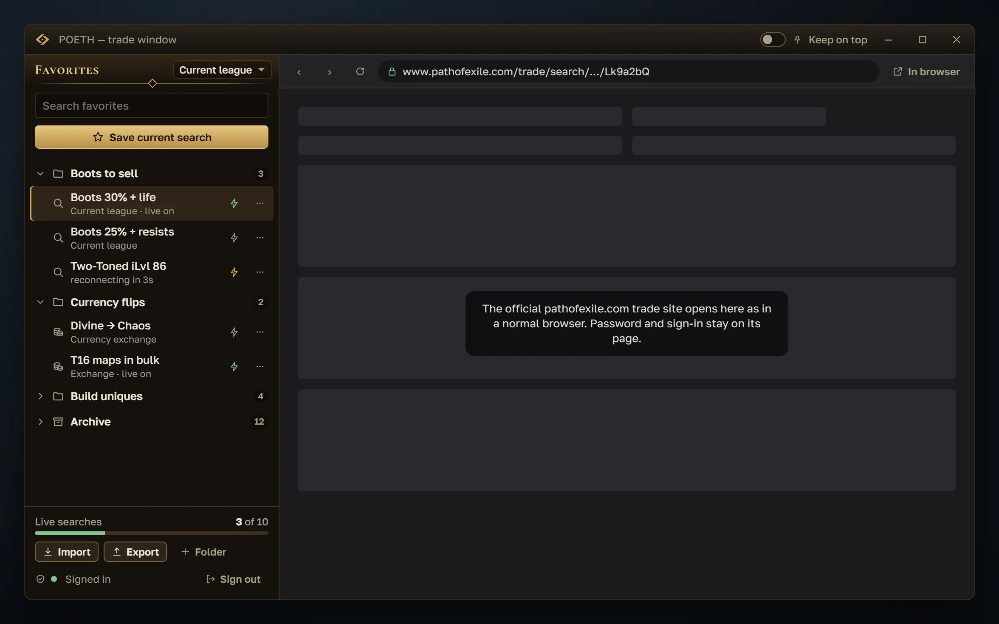
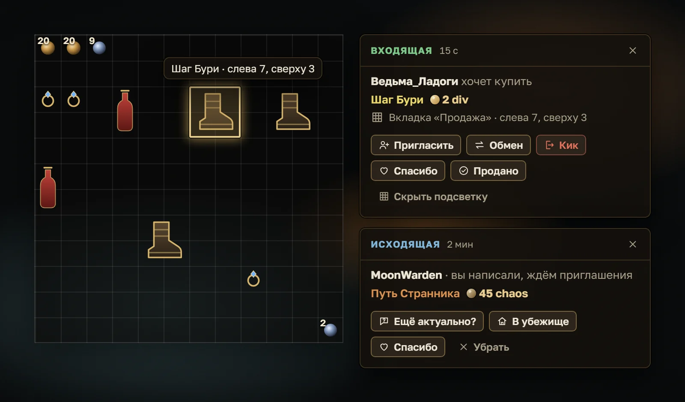
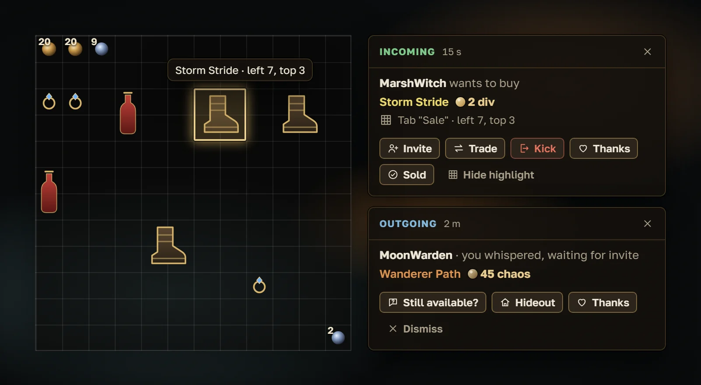

Path of Exile 1 · Path of Exile 2
Узнайте цену предмета, не выходя из игрыPrice any item without leaving the game
POETH — бесплатный оверлей для трейда в Path of Exile 1 и 2. Наведите курсор на предмет, нажмите Ctrl+D, и цена появится прямо поверх игры. POETH is a free trade overlay for Path of Exile 1 and 2. Hover an item, press Ctrl+D, and its price appears right over the game.
Работает с русским и английским клиентом. Простой режим и подсказки для новичков, без ботов и авто-покупок. Works with Russian and English game clients. A simple mode and hints for beginners, no bots and no auto-buying.


Как это выглядитWhat it looks like
Окна POETH тёмные и плотные, чтобы не спорить с игрой. Картинки на этой странице — макеты интерфейса; скриншоты из игры добавим с первым релизом. POETH windows are dark and compact so they stay out of the game's way. Pictures on this page are interface mockups; in-game screenshots come with the first release.


Трейд-окно с избраннымTrade window with favorites
Официальный сайт трейда в отдельном окне, а рядом ваши сохранённые поиски. The official trade site in its own window, with your saved searches next to it.
- Папки и поиск по избранномуFolders and search across favorites
- Live-поиск одним переключателемLive search with one toggle
- Импорт из Better TradingImport from Better Trading


Карточка сделкиDeal card
Когда вам пишут «хочу купить», POETH показывает, кто и что покупает, и подсвечивает предмет в тайнике. When someone whispers to buy, POETH shows who wants what and highlights the item in your stash.
- Пригласить, обмен, спасибо — кнопкамиInvite, trade and thanks as buttons
- Одна кнопка — одна команда в чатOne button sends one chat command
- Входящие и исходящие сделкиIncoming and outgoing deals
Установка за три шагаInstall in three steps
-
Скачайте установщикDownload the installer
Файл POETH-Setup-версия.exe лежит на странице релизов GitHub. The POETH-Setup-version.exe file is on the GitHub releases page.
Открыть релизыOpen releases -
Запустите егоRun it
Windows может показать синее окно «Система Windows защитила ваш компьютер». Нажмите «Подробнее», затем «Выполнить в любом случае». Windows may show a blue “Windows protected your PC” window. Click More info, then Run anyway.
Так Windows встречает программы без платной цифровой подписи. Код POETH открыт, а установщик собирается на GitHub из этого кода. This is how Windows treats programs without a paid code-signing certificate. POETH is open source, and the installer is built on GitHub from that code.
-
Откройте игру и POETHOpen the game and POETH
Поставьте в игре режим «Окно» или «Окно без рамки», запустите POETH и пройдите короткий мастер. Потом наведите курсор на предмет и нажмите Ctrl+D. Set the game to Windowed or Borderless windowed mode, start POETH and go through the short setup. Then hover an item and press Ctrl+D.
Система Windows защитила ваш компьютерWindows protected your PC
ПодробнееMore info1Система Windows защитила ваш компьютерWindows protected your PC
Приложение: POETH-Setup-0.1.0.exe
Издатель: неизвестный издатель
App: POETH-Setup-0.1.0.exe
Publisher: Unknown publisher
Почему это безопасноWhy it is safe
Открытый кодOpen source
Весь код лежит на GitHub под лицензией MIT. Установщик собирается из него автоматически, и проверить его может любой. All code is on GitHub under the MIT license. The installer is built from it automatically, and anyone can check it.
Вход только на сайте GGGSign-in only on the GGG site
Вход нужен только для live-поиска. Вы входите на официальной странице pathofexile.com, пароль видит только сайт GGG. Прайс-чек, regex и сделки работают без входа. You only need to sign in for live search. You sign in on the official pathofexile.com page, and only the GGG site sees your password. Price check, regex and deals work without signing in.
Данные остаются у васYour data stays with you
Нет телеметрии, рекламы и своих серверов. POETH обращается только к сайту трейда pathofexile.com, к сервисам цен вроде poe.ninja и к GitHub за обновлениями. No telemetry, no ads and no servers of our own. POETH only talks to the pathofexile.com trade site, price services such as poe.ninja, and GitHub for updates.
Без ботов и авто-покупокNo bots, no auto-buying
Одно ваше действие — одно действие программы. POETH вставляет сообщение в чат игры, а Enter нажимаете вы. Так требуют правила GGG для сторонних программ. One action from you is one action from the app. POETH pastes a message into game chat, and you press Enter. That is what GGG's rules for third-party tools require.
ВозможностиFeatures
- Прайс-чек по Ctrl+D.Price check with Ctrl+D. Свойства с тирами, похожие предложения и подсказка «почему такая цена».Mods with tiers, similar listings and a “why this price” hint.PoE 1PoE 2
- Трейд-окно.Trade window. Официальный сайт трейда и папки избранных поисков рядом.The official trade site with folders of saved searches beside it.PoE 1
- Live-поиск.Live search. Уведомление о новой находке поверх игры и «Написать» в один клик.New listings pop up over the game, with a one-click whisper.PoE 1
- Менеджер сделок.Deal manager. Входящие и исходящие сделки, подсветка предмета в тайнике.Incoming and outgoing deals, with the item highlighted in your stash.PoE 1
- Regex для поиска в игре.Regex for in-game search. Строки для карт и торговца и своя библиотека строк.Strings for maps and vendors, plus your own string library.PoE 1
- Трекер кампании.Campaign tracker. Квесты по актам, награды и подсказки по зонам.Quests by act, rewards and zone tips.PoE 2
- Простой и экспертный режим.Simple and expert modes. Новичку — подписи и подсказки, опытному — тиры, роллы и min/max.Labels and hints for beginners; tiers, rolls and min/max for veterans.
- Русский и английский.Russian and English. Интерфейс на двух языках, понимает предметы из обоих клиентов игры.The interface comes in both languages and reads items from either game client.
- Обновляется сам.Updates itself. Новая версия приходит из GitHub Releases, POETH предложит её установить.New versions come from GitHub Releases, and POETH offers to install them.
- Бесплатно для всех.Free for everyone. Без рекламы и платных функций, все версии открыты каждому.No ads and no paid features; every version is open to everyone.
Частые вопросыQuestions
Оверлей не появляется поверх игрыThe overlay does not show over the game
Включите в настройках графики игры режим «Окно» или «Окно без рамки». В полноэкранном режиме Windows не даёт другим программам рисовать поверх игры.
In the game's graphics settings, choose Windowed or Borderless windowed mode. In exclusive fullscreen, Windows does not let other programs draw over the game.
Ctrl+D ничего не делаетCtrl+D does nothing
Скорее всего, игра запущена от имени администратора. Windows не даёт обычной программе управлять таким окном. Запустите игру обычным способом или POETH тоже от администратора: правый клик по ярлыку → «Запуск от имени администратора». POETH сам предупредит, если заметит это.
Most likely the game is running as administrator. Windows does not let a normal program control such a window. Start the game normally, or start POETH as administrator too: right-click the shortcut → Run as administrator. POETH warns you when it detects this.
У меня русский клиент игры. Всё будет работать?Does it work with the Russian game client?
Да. POETH понимает предметы и в русском, и в английском клиенте. Язык самого POETH выбирается отдельно в настройках.
Yes. POETH reads items from both the Russian and the English client. POETH's own language is set separately in its settings.
Чем отличается работа с PoE 1 и PoE 2?What is the difference between PoE 1 and PoE 2?
Игра выбирается переключателем в шапке окна POETH. Для PoE 1 есть все функции трейда, для PoE 2 сейчас прайс-чек и трекер кампании.
You pick the game with the switch in the POETH window header. PoE 1 gets all trade features; PoE 2 currently has price check and the campaign tracker.
Windows пишет, что защитил компьютер. Это вирус?Windows says it protected my PC. Is it a virus?
Нет. Так Windows реагирует на программы без платной цифровой подписи. Код POETH открыт, а установщик собирается на GitHub из этого кода. Что нажать, показано в разделе «Установка».
No. This is how Windows reacts to programs without a paid code-signing certificate. POETH is open source, and the installer is built on GitHub from that code. See Install for what to click.
Это правда бесплатно? Что даёт подписка?Is it really free? What does a subscription give?
Да, все функции и все версии доступны каждому. Подписка на Boosty только поддерживает разработку: девлоги, голосования и имя в «Благодарностях» в программе. Функций она не открывает.
Yes, every feature and every version is open to everyone. A Boosty subscription only supports development: devlogs, polls and your name in the app's credits. It does not unlock features.
Поддержать проектSupport the project
POETH бесплатный: без рекламы и платных функций. Если он помогает вам в игре, разработку можно поддержать на Boosty. Подписка не открывает функций, всё доступно каждому. POETH is free, with no ads and no paid features. If it helps you in the game, you can support development on Boosty. A subscription unlocks nothing; everything is open to everyone.